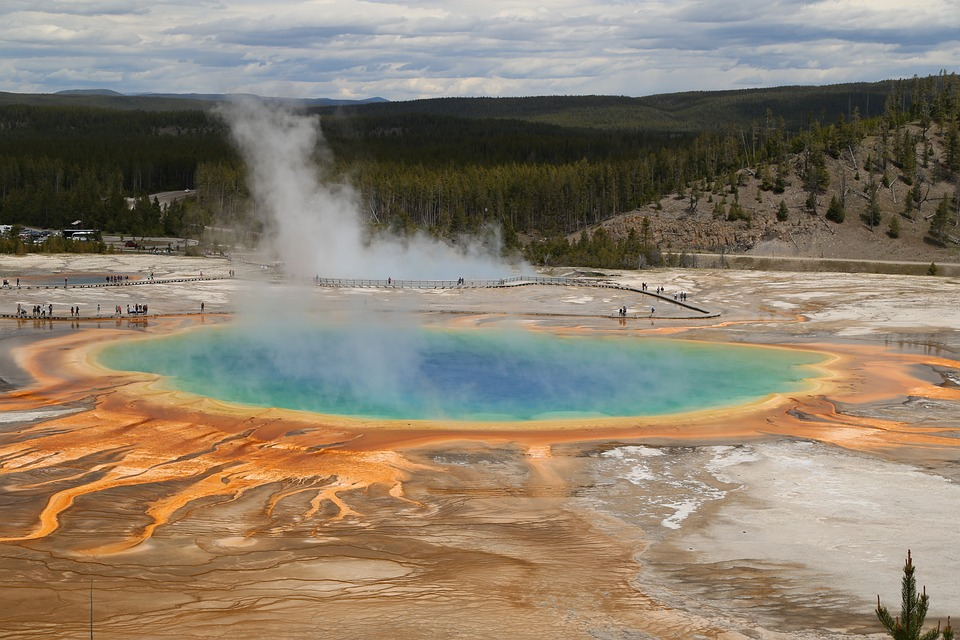
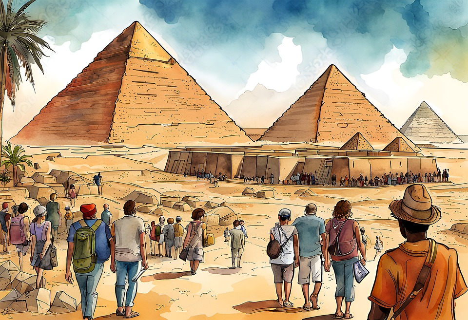
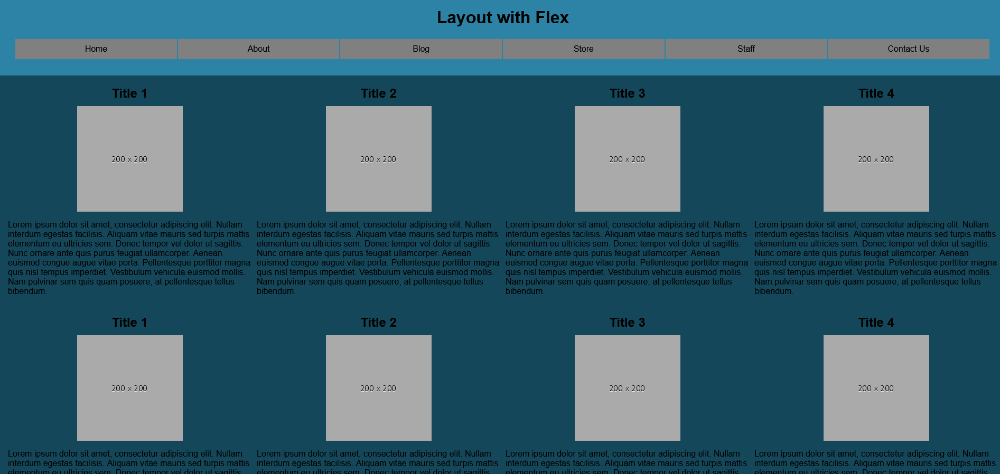

Assignment 1 - Basic HTML
The first assignment was working to make a website using basic HTML code. For this website I made it about two National Parks which were Yellowstone National Park and the Grand Canyon.
Assignment 2 - Basic CSS
For the second assignment I worked with combining both HTML and CSS. For this website I made it about the pyramids in Giza.
Assignment 3 - Page layout
For the third assignment I worked with flexboxes to make a copy of a picture of a website layout. This website would change depending on the screen size of the device viewing it.